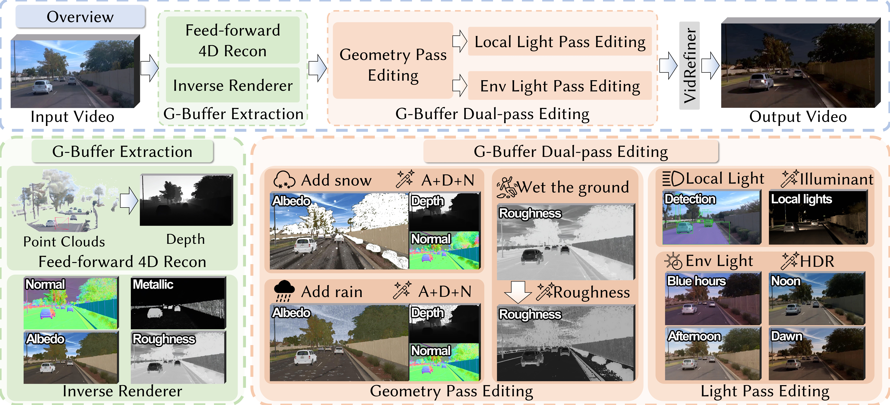

Abstract
Generative video models have significantly advanced the photorealistic synthesis of adverse weather for autonomous driving; However, they consistently demand massive datasets to learn rare weather scenarios. While 3D-aware editing methods alleviate these data constraints by augmenting existing video footage, they are fundamentally bottlenecked by costly per-scene optimization and suffer from inherent geometric and illumination entanglement.
In this work, we introduce AutoWeather4D, a feed-forward 3D-aware weather editing framework designed to explicitly decouple geometry and illumination. At the core of our approach is a G-buffer Dual-pass Editing mechanism. The Geometry Pass leverages explicit structural foundations to enable surface-anchored physical interactions, while the Light Pass analytically resolves light transport, accumulating the contributions of local illuminants into the global illumination to enable dynamic 3D local relighting.
Extensive experiments demonstrate that AutoWeather4D achieves comparable photorealism and structural consistency to generative baselines while enabling fine-grained parametric physical control, serving as a practical data engine for autonomous driving.
Pipeline and Methodology

AutoWeather4D introduces a feed-forward architecture for physics-grounded weather editing:
G-Buffer Extraction: Estimates explicit geometric and material priors (depth, albedo, normal, roughness) from monocular video.
Geometry Pass: Applies surface-anchored modifications to the estimated geometry, facilitating physically plausible effects such as snow accumulation and water ripples.
Light Pass: Models dynamic light transport based on the modified G-buffers, enabling volumetric atmospheric scattering and 3D local relighting.
VidRefiner: Employs a boundary-conditioned diffusion module to enhance perceptual realism while maintaining structural consistency with the physical simulation.
Progressive Snow Synthesis
Observe how our method progressively layers physical snow elements onto the driving scene.
Progressive Rain Synthesis
Observe how our method progressively layers physical rain elements onto the driving scene.
Decoupled 3D Local Relighting
Observe how our Light Pass explicitly isolates and models independent dynamic illuminants.
Gallery
Acknowledgments
We would like to thank the authors of DiffusionRenderer, WAN-FUN, and π³ (PI3) for making their code publicly available. Our implementation builds upon their valuable contributions.